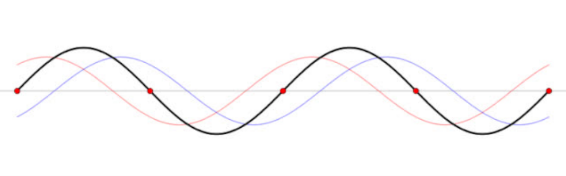
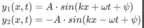
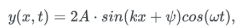
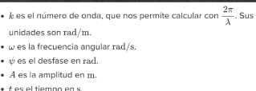
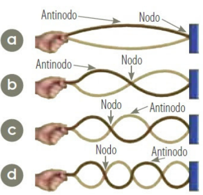

Entrada Blog
Introducción
Las ondas estacionarias son un fenómeno fascinante que ocurre en diversos contextos, desde la física de partículas hasta la acústica y la electrónica. En esta presentación, exploraremos qué son las ondas estacionarias, cómo se forman y dónde podemos encontrarlas en la naturaleza y en la tecnología.
¿Qué son las ondas estacionarias?
Llamamos onda estacionaria a un caso particular de interferencia que se produce cuando se superponen dos ondas de la misma dirección, amplitud y frecuencia, pero sentido contrario.
Ecuación de una onda estacionaria
La fórmula de una onda estacionaria se puede obtener sumando las ecuaciones de dos ondas que viajan en direcciones contrarias:
Si hacemos ahora la suma de las dos ondas, obtenemos lo siguiente:

¿Cómo se forman las ondas estacionarias?
-
Onda incidente y onda reflejada: Una onda se propaga y se refleja en una superficie. La onda reflejada viaja en sentido contrario a la incidente.
-
Superposición de ondas viajeras: Dos ondas viajan en sentido opuesto.

Aplicaciones de las ondas estacionarias
-
Se utilizan en instrumentos musicales, como cuerdas de guitarra y tubos de órgano, para producir sonidos específicos.
-
En la electrónica, las líneas de transmisión y las antenas utilizan ondas estacionarias para transportar señales de radiofrecuencia de manera eficiente.
Diferencias entre las ondas viajeras y las ondas estacionarias
-
Ondas Progresivas: Avanzan en el espacio.
-
Ondas Estacionarias: Formadas por superposición de ondas que viajan en direcciones opuestas, con movimiento perpendicular a la dirección de propagación.